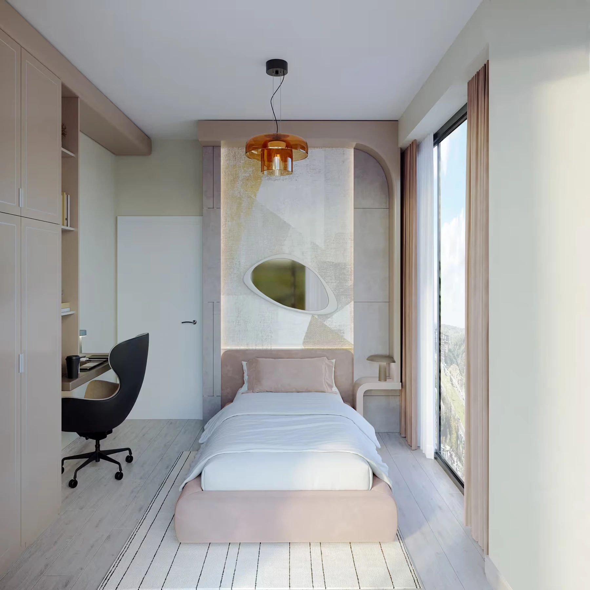

PROJECT OVERVIEW
Manzara İstanbul
A single-block residential project in Hamidiye, Kağıthane, with 57 homes and shared leisure facilities.
Home options1+1 to 3+1
FacilitiesPool, sauna and fitness
Photo gallery

Each gallery image is labelled by type. Architectural illustrations do not show the current construction condition; archive photographs are not a current status report.
EVERYDAY LIVING
Living spaces
The project presents apartment interiors, balconies and communal leisure spaces. Current home availability is supplied on request.
LOCATION AND ACCESS
Hamidiye · Kağıthane · İstanbul
Located on Fazilet Street in Hamidiye, Kağıthane. This is a different project from Manzara Adalar.
YOUR NEXT STEP
Choose your home
Request the current apartment selection, price and payment options. Compare the exact unit, view and included services before arranging your purchase.